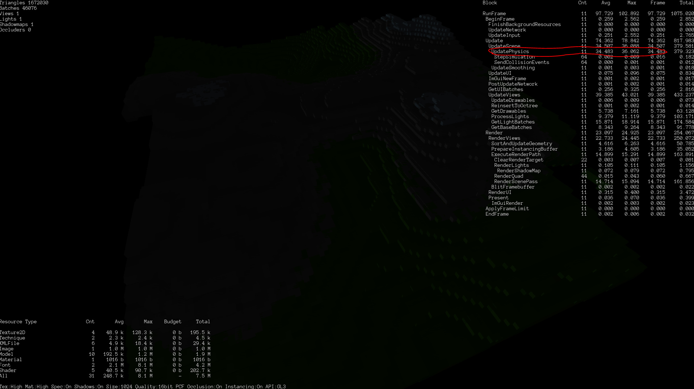
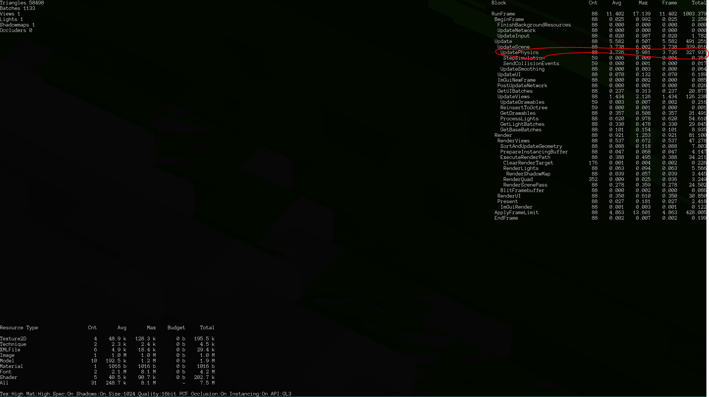

TrevorCash
I am a bit confused as to why I time spent in UpdatePhysics (in the profiler) changes with respect to how many nodes are visible. Below is the same scene with different camera zoom levels:
Is it because something about the draw calls actually happen in the physics update?
Zoomed Out (many nodes visible):

Zoomed In (very few nodes visible):
